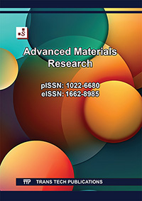

Experimental insights into the performance of compact desalination system
K. Thilagan, S. Advaith, and A. Mani
Energy, vol. 360, pp. 141846, September 2026
DOI: 10.1016/j.energy.2026.141846 →Research Scientist | Solar Desalination & Thermal Systems
Specializing in compact solar-driven desalination, multi-effect systems, PCM thermal storage, and natural refrigerant technologies for sustainable water and energy solutions.
Dr. Thilagan K. is a dedicated researcher specializing in solar energy and desalination systems. With a Ph.D. from IIT Madras, his work focuses on innovative solutions for sustainable water purification using renewable energy. He has published extensively in high-impact journals and presented at international conferences. Dr. Thilagan is a member of prestigious organizations including the International Solar Energy Society and the Indian Desalination Association.
His research spans compact desalination systems, multi-effect solar desalination, falling-film heat and mass transfer, PCM-based thermal storage, and natural refrigerant-assisted systems—contributing to scalable solutions for water and food security in coastal and off-grid regions.
Indian Institute of Technology Madras
Chennai, Tamil Nadu
Thesis: Experimental Investigation on Solar-Driven Multi-Effect Compact Sea Water Desalination System
Chennai, Tamil Nadu
Thesis: Studies on Drying of Leafy Vegetables Using Modified Solar Evacuated Tube Collectors
Sri Venkateswara College of Engineering
Sriperumbudur, Tamil Nadu
Department of Mechanical Engineering, IIT Madras
Department of Mechanical Engineering, IIT Madras
Department of Mechanical Engineering, IIT Madras
Department of Mechanical Engineering, IIT Madras
Department of Mechanical Engineering, IIT Madras
Department of Mechanical Engineering, IIT Madras
Department of Mechanical Engineering, IIT Madras
K. Thilagan, S. Advaith, and A. Mani
Energy, vol. 360, pp. 141846, September 2026
DOI: 10.1016/j.energy.2026.141846 →
K. Thilagan, S. Advaith, and A. Mani
Solar Compass, vol. 13, pp. 100–110, Mar. 2025
DOI: 10.1016/j.solcom.2025.100110 →
M. Annamalai and K. Thilagan
Solar Energy, vol. 259, pp. 246–256, Jul. 2023
DOI: 10.1016/j.solener.2023.05.004 →
P. Raghu, K. Thilagan, M. Thirumoorthy, S. Lokachari, and N. Nallusamy
Advanced Materials Research, vol. 768, pp. 173–179, Sep. 2013
DOI: 10.4028/www.scientific.net/AMR.768.173 →Advaith S., Srikrishna Sahu, Prakash Koundinyan, Thilagan K. and Thileepan Panchatsaram, "A system and a method for energy-efficient low temperature greywater treatment," IP No. 202641045609, 2026 [Published]
University Rovira i Virgili, Tarragona, Spain — March 2015
Workshop on Natural Refrigerants for Sustainable Heating and Cooling, IIT Madras — February 2026
Workshop on Natural Refrigerants-based HVAC&R Systems, IIT Madras — April 2025
8th National and 2nd International Conference on Refrigeration and Air Conditioning, IIT Madras — March 2024
Features the success of a compact desalination system developed at IIT Madras based on solar MED system at Kanyakumari for producing fresh water.
The Times of India, Chennai | June 2025Discusses IIT Madras's solar-powered desalination unit targeting a capacity of 10,000 litres of potable water daily.
IIT Madras LinkedIn | 2025Highlights the development of a solar-powered desalination system that converts seawater into clean drinking water using only renewable energy.
IIT Madras Tech Talk | 2025Features the success of a solar multi-effect desalination system developed at IIT Madras for producing fresh water.
Polimer News | 2021Showcases the first solar-powered plant in India to convert seawater into potable water, developed by IIT Madras.
Details a stand-alone solar multi-effect desalination system developed for sustainable water production.
Reports on IIT Madras establishing India's first solar-powered desalination plant for clean water production.
Address
A-3/7 Cee Dee Yes Enclave, Taramani Link Road
Tansi Nagar, Velachery, Chennai
Tamil Nadu, India – 600 042
Phone
+91 94454 92154